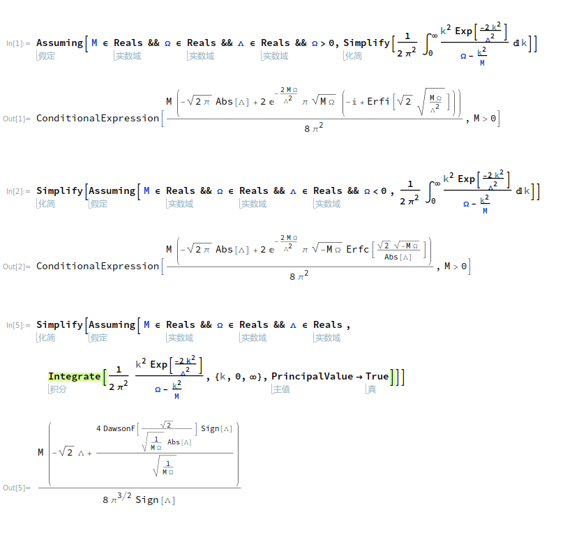

List of Ingtegrals
For $a,b \in \mathbb{R}$ and $a>0 , b>0$
$$\begin{align} \int_0^{+\infty} \frac{e^{-\lambda k^2}}{a+b k^2}\mathrm{d}k = \frac{e^{\frac{a\lambda}{b}}\pi}{2\sqrt{ab}}\mathrm{Erfc} \left(\sqrt{\frac{a\lambda}{b}} \right) \end{align}$$ $$\begin{align} \mathcal{P}\int_{-\infty}^{\infty} \frac{e^{-k^2}}{1-k} \mathrm{d}k = \frac{\pi}{e}\mathrm{erfi}(1) = \frac{\pi}{e}\cdot \frac{2}{\sqrt{\pi}} \int_0^1 e^{u^2}\mathrm{d}u \end{align}$$Integral I
推导下面的积分 ( $\Omega < 0$ )
$$\begin{align} \frac{1}{2\pi^2}\int_0^{\infty}\frac{ k^2e^{-2k^2 / \bar{\Lambda}_s^2} } {\Omega-\frac{k^2}{M} } \mathrm{d}k = -\frac{M \bar{\Lambda}_s}{4\pi\sqrt{2\pi}} +\frac{M\sqrt{-M\Omega}}{4\pi} e^{-M\Omega \frac{2}{ \bar{\Lambda}_s^2}} \mathrm{Erfc}\left(\frac{\sqrt{-2M\Omega}}{\bar{\Lambda}_s}\right) \end{align}$$去掉分子
利用
$$\begin{align} \frac{ k^2 } {\Omega-\frac{k^2}{M} } = -M(1-\frac{\Omega}{\Omega - \frac{k^2}{M}}) \end{align}$$第一项高斯积分可以积出
$$\begin{align} &\frac{1}{2\pi^2}\int_0^{\infty}\mathcal{P}\frac{ k^2e^{-2k^2 / \bar{\Lambda}_s^2} } {\Omega-\frac{k^2}{M} } \mathrm{d}k \\ = & -\frac{M \bar{\Lambda}_s}{4\pi\sqrt{2\pi}} +\frac{M\Omega}{4\pi^2} \int_{-\infty}^{ +\infty} \mathrm{d}k\cdot \frac{ k^2e^{-2k^2 / \bar{\Lambda}_s^2} } {\Omega-\frac{k^2}{M} } \end{align}$$第二项
第二项利用
$$\begin{align} \frac{1}{\Omega - \frac{k^2}{M}} = - \int_0^{\infty}e^{(\Omega - k^2/M)t}\mathrm{d}t \end{align}$$之后关于 $k$ 的积分是高斯积分, 可以积掉, 所以原积分第二项化为
$$\begin{align} -\frac{M\Omega}{4\pi^2}\int_0^{\infty} \mathrm{d}t\cdot \frac{\sqrt{\pi}}{\sqrt{ \frac{2}{ \bar{\Lambda}_s^2} +\frac{t}{M}}}e^{\Omega t} \end{align}$$化为 Error Function
第二项做换元
$$\begin{align} u = \sqrt{-M\Omega} \sqrt{\frac{2}{ \bar{\Lambda}_s^2} +\frac{t}{M}} \end{align}$$第二项积分化为
$$\begin{align} \frac{M\sqrt{-M\Omega}}{2\pi\sqrt{\pi}} e^{-M\Omega \frac{2}{\bar{\Lambda}_s^2}} \int_{\sqrt{-\frac{2M\Omega}{\bar{\Lambda}_s^2} }}^{\infty} e^{-t^2}\cdot\mathrm{d}t \end{align}$$Error Function
利用 Error Function 的定义, 原积分化为
$$\begin{align} \frac{1}{2\pi^2}\int_0^{\infty}\frac{ k^2e^{-2k^2 / \bar{\Lambda}_s^2} } {\Omega-\frac{k^2}{M} } \mathrm{d}k = -\frac{M \bar{\Lambda}_s}{4\pi\sqrt{2\pi}} +\frac{M\sqrt{-M\Omega}}{4\pi} e^{-M\Omega \frac{2}{ \bar{\Lambda}_s^2}} \mathrm{Erfc}\left(\frac{\sqrt{-2M\Omega}}{\bar{\Lambda}_s^2}\right) \end{align}$$其中
$$\begin{align} \mathrm{Erfc}(x) = 1 - \mathrm{Erf}(x) = \frac{2}{\sqrt{\pi}} \int_x^{\infty} e^{-t^2}\mathrm{d}t \end{align}$$Integral...
推导下面的积分 ( $\Omega < 0$ )
$$\begin{align} \frac{1}{2\pi^2}\int_0^{\infty}\frac{ k^2e^{-2k^2 / \bar{\Lambda}_s^2} } {\Omega-\frac{k^2}{M} } \mathrm{d}k = -\frac{M \bar{\Lambda}_s}{4\pi\sqrt{2\pi}} +\frac{M\sqrt{-M\Omega}}{4\pi} e^{-M\Omega \frac{2}{ \bar{\Lambda}_s^2}} \mathrm{Erfc}\left(\frac{\sqrt{-2M\Omega}}{\bar{\Lambda}_s}\right) \end{align}$$去掉分子
利用
$$\begin{align} \frac{ k^2 } {\Omega-\frac{k^2}{M} } = -M(1-\frac{\Omega}{\Omega - \frac{k^2}{M}}) \end{align}$$第一项高斯积分可以积出
$$\begin{align} &\frac{1}{2\pi^2}\int_0^{\infty}\mathcal{P}\frac{ k^2e^{-2k^2 / \bar{\Lambda}_s^2} } {\Omega-\frac{k^2}{M} } \mathrm{d}k \\ = & -\frac{M \bar{\Lambda}_s}{4\pi\sqrt{2\pi}} +\frac{M\Omega}{4\pi^2} \int_{-\infty}^{ +\infty} \mathrm{d}k\cdot \frac{ k^2e^{-2k^2 / \bar{\Lambda}_s^2} } {\Omega-\frac{k^2}{M} } \end{align}$$第二项
第二项利用
$$\begin{align} \frac{1}{\Omega - \frac{k^2}{M}} = - \int_0^{\infty}e^{(\Omega - k^2/M)t}\mathrm{d}t \end{align}$$之后关于 $k$ 的积分是高斯积分, 可以积掉, 所以原积分第二项化为
$$\begin{align} -\frac{M\Omega}{4\pi^2}\int_0^{\infty} \mathrm{d}t\cdot \frac{\sqrt{\pi}}{\sqrt{ \frac{2}{ \bar{\Lambda}_s^2} +\frac{t}{M}}}e^{\Omega t} \end{align}$$化为 Error Function
第二项做换元
$$\begin{align} u = \sqrt{-M\Omega} \sqrt{\frac{2}{ \bar{\Lambda}_s^2} +\frac{t}{M}} \end{align}$$第二项积分化为
$$\begin{align} \frac{M\sqrt{-M\Omega}}{2\pi\sqrt{\pi}} e^{-M\Omega \frac{2}{\bar{\Lambda}_s^2}} \int_{\sqrt{-\frac{2M\Omega}{\bar{\Lambda}_s^2} }}^{\infty} e^{-t^2}\cdot\mathrm{d}t \end{align}$$Error Function
利用 Error Function 的定义, 原积分化为
$$\begin{align} \frac{1}{2\pi^2}\int_0^{\infty}\frac{ k^2e^{-2k^2 / \bar{\Lambda}_s^2} } {\Omega-\frac{k^2}{M} } \mathrm{d}k = -\frac{M \bar{\Lambda}_s}{4\pi\sqrt{2\pi}} +\frac{M\sqrt{-M\Omega}}{4\pi} e^{-M\Omega \frac{2}{ \bar{\Lambda}_s^2}} \mathrm{Erfc}\left(\frac{\sqrt{-2M\Omega}}{\bar{\Lambda}_s^2}\right) \end{align}$$其中
$$\begin{align} \mathrm{Erfc}(x) = 1 - \mathrm{Erf}(x) = \frac{2}{\sqrt{\pi}} \int_x^{\infty} e^{-t^2}\mathrm{d}t \end{align}$$与 Mathematica 的结果一致

其中
$$\begin{align} \mathrm{Erfc}(x) = 1 - \mathrm{Erf}(x) = \frac{2}{\sqrt{\pi}} \int_x^{\infty} e^{-t^2}\mathrm{d}t \end{align}$$ $$\begin{align} \mathrm{Erfi}(z) = -\mathrm{i}\cdot\mathrm{Erf}(\mathrm{i}z) \end{align}$$Supplementary
Error function , Dawnson Function
Hilbert Transformation
Reference and Acknowledge
Math StackExchange
- https://math.stackexchange.com/questions/3231991/an-integration-about-error-function
- https://math.stackexchange.com/questions/3245061/compute-an-integral-about-error-function-int-infty-infty-frace-k2
James Stewart, Calculus 8th ed
- 9.5 Linear Equations
同济大学数学系, 高等数学上册, 第六版
- 7.4 一阶线性微分方程